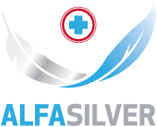

<!DOCTYPE html>
<html lang="cs">
  <title>Alfasilver sprej na rány a odřeniny</title><meta name="viewport" content="width=device-width, initial-scale=1">
  <meta name="description" content="#{i18n.wounds.description}"/>
  <link href="css/fonts.css" rel="stylesheet"/><link rel="stylesheet" href="https://cdn.jsdelivr.net/npm/bootstrap@4.0.0/dist/css/bootstrap.min.css" integrity="sha384-Gn5384xqQ1aoWXA+058RXPxPg6fy4IWvTNh0E263XmFcJlSAwiGgFAW/dAiS6JXm" crossorigin="anonymous">
  <link href="css/general.css" rel="stylesheet"/><link rel="icon apple-touch-ico" type="image/png" href="images/favicon.png"/>
  <script type="text/javascript">
    window.onload = function () {
        const slider = document.querySelector(".slider--animate")
        const elements = slider.children
        const holder = elements[0] 
    
        function fadeOut(el) {
            el.style.opacity = 0
        }
    
        function fadeIn(el) {
            el.style.opacity = 1
        }
    
        function changeText(holder, idx) {
            holder.innerHTML = elements[idx].innerHTML
        }
    
        function animate() {
            let idx = 2
            return () => {
                fadeOut(holder)
                setTimeout(() => {
                    if (idx >= elements.length) idx = 1
                    changeText(holder, idx++)
                    fadeIn(holder)
                }, 800)
            }
        }
        setInterval(animate(), 3000)
    
        function handleActive(items, cb) {
            return function(e) {
                const wasActive = this.classList.contains("active")
            
                for (let f of items) {
                    f.classList.remove("active") 
                }
                if (!wasActive) {
                    this.classList.add("active")
                    if (cb) cb(this)
                }
                //- if (wasActive) {
                //-     this.classList.remove("active")
                //- }
            }
        }
    
        const faqs = document.querySelectorAll(".faq--container > .grid-properties  .property")
        for (let f of faqs) {
            f.addEventListener("click", handleActive(faqs))
        }
    
    
        const imagesInstructions = document.querySelectorAll(".image-instructions > img")
        function changeImage(el) {
            const imageSrc = el.getAttribute("data-image")
            if (imageSrc) {
                for (let img of imagesInstructions) {
                    img.src = imageSrc
                }
            }
        }
    
        const instructions = document.querySelectorAll(".instructions--container .grid-properties  .property")
        for (let f of instructions) {
            f.addEventListener("click", handleActive(instructions, changeImage))
        }
      
        const movableImage = document.querySelector("#movable-alfasilver")
        const staticImage = document.querySelector(".wounds--container")
        const offset = movableImage.offsetTop
        const maxTop = staticImage.offsetTop - 200
        console.log("maxTop", maxTop, staticImage.getBoundingClientRect())
        window.onscroll = function (e) {  
            const scrollTop = window.pageYOffset || document.documentElement.scrollTop
            const target = offset +scrollTop
            console.log(movableImage.style.top, scrollTop)
            if (target < maxTop) {
            movableImage.style.top = `${offset +scrollTop}px`
            }
    
        } 
    } 
  </script><meta charset="UTF-8">
</meta></link></meta></html>
<body>
  <div class="container--header"><video id="background-video" autoplay="" loop="" muted="" poster="images/bike.png">
<source src="videos/alfasilver-20s.mp4" type="video/mp4">
</source></video>
    <header class="container--margin introduction--container nopadding-top">
      <div class="header-top">
        <div class="logo"></div>
        <nav class="desktop-only-1024">
          <ul> 
            <li class="raise"><a href="#alfasilver">Na každý pád</a></li>
            <li class="raise"><a href="#wounds">Sprej na rány</a></li>
            <li class="raise"><a href="#properties">Proč mít po ruce</a></li>
            <li class="raise"><a href="#instructions">Návod k použití</a></li>
            <li class="raise"><a href="#partners">Kde koupit</a></li>
            <li class="raise"><a href="#contact">Kontakt</a></li>
          </ul>
        </nav>
      </div>
      <div class="d-flex">
        <div class="desktop-col-spray desktop-only-1024"></div>
        <div class="desktop-col-text">
          <div class="header">
            <h2>Aby pády dobře</h2>
            <h1>dopadly</h1>
          </div>
          <div class="slider slider--animate">
            <div>Nepálí</div>
            <div class="hidden">Nepálí</div>
            <div class="hidden">Neštípe</div>
            <div class="hidden">Kryje rány</div>
            <div class="hidden">Chrání před infekcí</div>
          </div>
        </div>
      </div>
    </header>
  </div>
  <main>
    <article class="container--margin alfasilver--container" id="alfasilver">
      <div class="d-flex">
        <div class="desktop-col-spray"> </div>
        <div class="desktop-col-text">
          <div class="d-flex">
            <div class="mobile-col-6 text-center mobile-only">
              <p class="img-label text-center">Zdravotnický prostředek</p>
            </div>
            <div class="mobile-col-6">
              <h4><b>Alfasilver</b> sprej na rány a odřeniny</h4>
            </div>
          </div>
          <h2 class="margin-bottom-16">Na každý pád</h2>
          <p>Co si budeme povídat. Pády k životu patří. Předchází většině našich zranění. Odřeninám, šrámům, popáleninám i ranám. Padáme při běhu, chůzi, při jízdě na kole, koloběžce, tříkolce, skatu nebo na inline bruslích. Padáme všichni bez rozdílu. Šikovní, nešikové, malí i velcí.</p>
          <p>Pády ale nemusí nutně končit v bolestech a v slzách.</p>
          <p>Pokud máme po ruce sprej Alfasilver, dopadne každý pád dobře.</p>
          <h5 class="font-weight-bold">Alfasilver. Na každý pád.</h5>
        </div>
      </div>
    </article>
    <article class="container--margin wounds--container" id="wounds">
      <div class="d-flex">
        <div class="desktop-col-spray"></div>
        <div class="desktop-col-text">
          <h2 class="margin-bottom-16 font-weight-bold">Sprej na rány</h2>
          <p class="mobile-only">Co si budeme povídat. Pády k životu patří. Předchází většině našich zranění. Odřeninám, šrámům, popáleninám i ranám. Padáme při běhu, chůzi, při jízdě na kole, koloběžce, tříkolce,</p>
          <p class="desktop-only">Bezbolestné ošetření akutních a chronických ran. ALFASILVER obsahuje ionizované stříbro, které díky antimikrobiálním účinkům zbavuje ránu infekce a minerální prášek zeolit, který má mírné hemostatické účinky a dokáže zastavit krvácení z rány.</p>
          <div class="grid-wounds grid--wounds">
            <div class="m-badge text-center"><svg xmlns="http://www.w3.org/2000/svg" xmlns:xlink="http://www.w3.org/1999/xlink" width="58.995" height="58.995" viewBox="0 0 58.995 58.995" inline="inline" alt="Na odřeniny">
  <defs>
    <clipPath id="clip-path">
      <rect id="Rectangle_44" data-name="Rectangle 44" width="58.995" height="58.995" transform="translate(0 0)"/>
    </clipPath> 
  </defs>
  <g id="Group_15" data-name="Group 15" transform="translate(0 0)"> 
    <g id="Group_14" data-name="Group 14" clip-path="url(#clip-path)">
      <path id="Path_5" data-name="Path 5" d="M29.821.2l6.231,12.848a.359.359,0,0,0,.441.183L49.984,8.555a.359.359,0,0,1,.457.457L45.762,22.5a.36.36,0,0,0,.182.441l12.849,6.231a.359.359,0,0,1,0,.646L45.944,36.052a.36.36,0,0,0-.182.441l4.679,13.491a.359.359,0,0,1-.457.457L36.493,45.762a.359.359,0,0,0-.441.183L29.821,58.793a.36.36,0,0,1-.647,0l-6.23-12.848a.359.359,0,0,0-.441-.183L9.012,50.441a.359.359,0,0,1-.458-.457l4.68-13.491a.36.36,0,0,0-.183-.441L.2,29.821a.359.359,0,0,1,0-.646l12.848-6.231a.36.36,0,0,0,.183-.441L8.554,9.012a.359.359,0,0,1,.458-.457L22.5,13.234a.359.359,0,0,0,.441-.183L29.174.2a.36.36,0,0,1,.647,0"/>
    </g>
  </g>
</svg>
              <p class="font-weight-bold">Na odřeniny</p>
            </div>
            <div class="m-badge text-center"><svg xmlns="http://www.w3.org/2000/svg" xmlns:xlink="http://www.w3.org/1999/xlink" width="44" height="59.923" viewBox="0 0 44 59.923" inline="inline" alt="Na popáleniny">
  <defs>
    <clipPath id="clip-path">
      <rect id="Rectangle_46" data-name="Rectangle 46" width="44" height="59.923" transform="translate(0 0)"/>
    </clipPath>  
  </defs>
  <g id="Group_19" data-name="Group 19" transform="translate(0 0)">
    <g id="Group_18" data-name="Group 18" clip-path="url(#clip-path)">
      <path id="Path_7" data-name="Path 7" d="M35.626,21.03C28.955,29.631,22,26.923,22,26.923,27.984,18.066,24.2,6.572,20.615.651a1.368,1.368,0,0,0-2.518.525c-1.2,8.941-6.772,14.318-10.764,18.414A27.682,27.682,0,0,0,0,37.923a22,22,0,0,0,44,0c0-4.99-3.056-12.515-6.165-16.857a1.374,1.374,0,0,0-2.209-.036"/>
    </g>
  </g>
</svg>
              <p class="font-weight-bold">Na popáleniny</p>
            </div>
            <div class="m-badge text-center"><svg xmlns="http://www.w3.org/2000/svg" xmlns:xlink="http://www.w3.org/1999/xlink" width="65.122" height="55.964" viewBox="0 0 65.122 55.964" inline="inline" alt="Na řezné rány">
  <defs>
    <clipPath id="clip-path">
      <rect id="Rectangle_45" data-name="Rectangle 45" width="65.122" height="55.964" transform="translate(0 0)"/>
    </clipPath> 
  </defs>  
  <g id="Group_17" data-name="Group 17" transform="translate(0 0)">
    <g id="Group_16" data-name="Group 16" clip-path="url(#clip-path)">
      <path id="Path_6" data-name="Path 6" d="M0,54.122,53.5.62a2.119,2.119,0,0,1,3,0l8,8a2.119,2.119,0,0,1,0,3L44,32.122,50.174,38.3a1.671,1.671,0,0,1,.027,2.347A51.333,51.333,0,0,1,0,54.122"/>
    </g>
  </g>
</svg>
              <p class="font-weight-bold">Na řezné rány</p>
            </div>
            <div class="m-badge text-center"><svg xmlns="http://www.w3.org/2000/svg" xmlns:xlink="http://www.w3.org/1999/xlink" width="59.48" height="59.48" viewBox="0 0 59.48 59.48" inline="inline" alt="Na odřeniny">
  <defs>
    <clipPath id="clip-path">
      <rect id="Rectangle_43" data-name="Rectangle 43" width="59.48" height="59.48" transform="translate(0 0)"/>
    </clipPath>
  </defs>
  <g id="Group_13" data-name="Group 13" transform="translate(0 0)">
    <g id="Group_12" data-name="Group 12" clip-path="url(#clip-path)">
      <path id="Path_2" data-name="Path 2" d="M38.577,29.74A8.837,8.837,0,1,1,29.741,20.9a8.836,8.836,0,0,1,8.836,8.836"/>
      <path id="Path_3" data-name="Path 3" d="M29.74,59.48A29.74,29.74,0,1,1,59.48,29.74,29.774,29.774,0,0,1,29.74,59.48M29.74,4A25.74,25.74,0,1,0,55.48,29.74,25.769,25.769,0,0,0,29.74,4"/>
      <path id="Path_4" data-name="Path 4" d="M29.74,49.15A19.41,19.41,0,1,1,49.15,29.74,19.432,19.432,0,0,1,29.74,49.15m0-34.82A15.41,15.41,0,1,0,45.15,29.74,15.428,15.428,0,0,0,29.74,14.33"/>
    </g>
  </g>
</svg>
              <p class="font-weight-bold">Na odřeniny</p>
            </div>
          </div>
        </div>
      </div>
    </article>
    <article class="container--margin properties--container nopadding-bottom" id="properties">
      <h2 class="desktop-align-center-1024 margin-bottom-24 font-weight-bold color-blue200">Proč mít po ruce?</h2>
      <div class="grid-properties grid--properties grid-properties--active">
        <div class="desktop-col-4">
          <div class="property">
            <h4 class="font-weight-bold">NEPÁLÍ A NEŠTÍPE</h4>
            <p>Osušte slzičky. Ošetření Alfasilverem nebolí. Aplikace je mírně chladivá.</p>
          </div>
          <div class="property">
            <h4 class="font-weight-bold">CHRÁNÍ PŘED INFEKCÍ</h4>
            <p>Co rychle přišlo, rychle odejde. Antimikrobiální vlastnosti ionizovaného stříbra zabrání množení bakterií.</p>
          </div>
        </div>
        <div class="desktop-col-4 desktop-only-1024 image--properties">
          <p class="img-label desktop-only text-center">Zdravotnický prostředek</p>
        </div>
        <div class="desktop-col-4">
          <div class="property">
            <h4 class="font-weight-bold">URYCHLUJE HOJENÍ</h4>
            <p>Nečekejte do svatby. Chladivý sprej vytváří antiseptické a vlhké prostředí pro rychlejší hojení.</p>
          </div>
          <div class="property">
            <h4 class="font-weight-bold">MŮŽE NAHRADIT NÁPLAST</h4>
            <p>Na co náplasti nebo obvaz?! Mikronizovaný zeolitový prášek přilne k ráně a vytvoří na ni ochrannou vrstvu.</p>
          </div>
        </div>
      </div>
    </article>
    <article class="container--margin instructions--container nopadding-bottom" id="instructions">
      <h2 class="desktop-align-center-1024 margin-bottom-24 font-weight-bold color-blue200">Jak postupovat při&nbsp;ošetření rány</h2>
      <p/>
      <div class="grid-properties tips--container">
        <div class="desktop-col-6">
          <div class="property property--arrow active" data-image="images/bike2.png">
            <h3 class="font-weight-bold">Akutní rány</h3>
            <h6>ODŘENINY, POPÁLENINY, ŠKRÁBANCE A ŘEZNÉ RÁNY</h6>
            <p> Před ošetřením ránu očistěte od viditelných nečistot (vodou nebo fyziologickým roztokem).<br/><br/>Sprej řádně protřepejte. Na ránu nastříkejte souvislou vrstvu prášku ze vzdálenosti 20 – 30 cm.<br/><br/>Na ráně zůstane prodyšná vrstva bílého prášku, který přilne na vlhké části rány a chrání ji před množením bakterií. Na suchém okolí prášek nepřilne a je možné jej snadno odstranit.<br/><br/>Drobné, nekrvácivé rány již není nutné zakrývat. Hlubší, krvácivé či secernující rány a rány v oblastech zvýšeného namáhání zakryjte nepřilnavým krytím.
            </p>
          </div>
          <div class="image-instructions mobile-only"></div>
          <div class="property property--arrow" data-image="images/bike.png">
            <h3 class="font-weight-bold">Chronické rány</h3>
            <h6>BÉRCOVÉ VŘEDY, PROLEŽENINY, ŠPATNĚ SE HOJÍCÍ RÁNY A DALŠÍ</h6>
            <p> TODO fancy popis<br><br><br/><br/>
            </br></br></p>
          </div>
        </div>
        <div class="desktop-col-6">
          <div class="image-instructions desktop-only-1024"></div>
        </div>
      </div>
    </article>
    <article class="container--margin faq--container nopadding-bottom" id="faq">
      <h2 class="desktop-align-center-1024 margin-bottom-24 color-blue200 font-weight-bold">Na co se NEJČASTĚJI ptáte</h2>
      <div class="grid-properties grid--faq">
        <div class="col1--faq">
          <div class="property property--arrow active">
            <h3 class="font-weight-bold">ZČERNÁ (ZOXIDUJE) PŘÍPRAVEK na ráně?</h3>
            <p>Ne. Ionty stříbra jsou navázány na zeolitový prášek, který chrání stříbro před oxidací. K zabarvení prášku může dojít vlivem absorpce tekutin přijatých z rány.</p>
          </div>
          <div class="property property--arrow">
            <h3 class="font-weight-bold">MOHOU PŘÍPRAVEK POUŽÍVAT I TĚHOTNÉ A KOJÍCÍ ŽENY?</h3>
            <p>TODO</p>
          </div>
        </div>
        <div>
          <div class="property property--arrow">
            <h3 class="font-weight-bold">MOHU POUŽÍT DOHROMADY S JINOU DESINFEKCÍ?</h3>
            <p>TODO</p>
          </div>
          <div class="property property--arrow">
            <h3 class="font-weight-bold">OD JAKÉHO VĚKU JE MOŽNÉ PŘÍPRAVEK POUŽÍVAT?</h3>
            <p>TODO</p>
          </div>
          <div class="property property--arrow">
            <h3 class="font-weight-bold">JAK DLOUHO LZE PŘÍPRAVEK UŽÍVAT?</h3>
            <p>TODO</p>
          </div>
        </div>
      </div>
    </article>
    <article class="container--margin partners--container" id="partners">
      <h2 class="desktop-align-center-1024 margin-bottom-24 color-blue200 font-weight-bold">Kde koupit</h2>
      <div class="partners-img--container">
        <div class="partner--container"><a href="#"></a></div>
        <div class="partner--container"><a href="#"></a></div>
        <div class="partner--container"><a href="#"></a></div>
        <div class="partner--container"><a href="#"></a></div>
        <div class="partner--container"><a href="#"></a></div>
        <div class="partner--container"><a href="#"></a></div>
        <div class="partner--container"><a href="#"></a></div>
      </div>
    </article>
    <footer id="contact">
      <div class="logo sidemargin--left"></div>
      <div class="container--margin contacts--container">
        <div>
          <p>Alfasilver je zdravotnický prostředek určený k ošetření ran, odřenin, popálenin menšího rozsahu, kožních poranění. Pečlivě prostudujte návod k použití, účinky a způsob použití konzultujte s lékařem nebo lékárníkem.</p>
        </div>
        <div>
          <h2 class="font-weight-bold margin-bottom-14">Kontakty</h2>
          <p>Sídlo distributora pro ČR:</p><br/>
          <address>Glenmark Pharmaceuticals Distribution, s. r. o.<br/>City Tower (3. podlaží)<br/>Hvězdova 1716/2b, 140 78, Praha 4<br/>Tel.: <a href="tel:+420 227 629 511">+420 227 629 511</a><br/>E-mail: <a href="mailto:czech.info@glenmarkpharma.com">czech.info@glenmarkpharma.com</a><br/><a href="http://www.glenmarkpharma.cz">www.glenmarkpharma.cz</a>
          </address><br/>
        </div>
        <div class="contact-us">
          <p>V případě hlášení nežádoucích účinků zdravotnického prostředku ALFASILVER nás neváhejte, prosím, kontaktovat:</p><br/>Tel.: <a href="tel:+420 227 629 511">+420 227 629 511</a><br/><a href="tel:czech.pvg@glenmarkpharma.com">czech.pvg@glenmarkpharma.com</a><br/><br/><a class="underline" href="#">Zásady ochrany osobních údajů</a>
        </div>
      </div>
    </footer>
  </main>
  <div class="alwaysOn">Alfasilver je zdravotnický prostředek určený k&nbsp;ošetření ran, odřenin, popálenin menšího rozsahu, kožních poranění. Pečlivě prostudujte návod k použití, účinky a způsob použití konzultujte s lékařem nebo lékárníkem.</div>
</body>